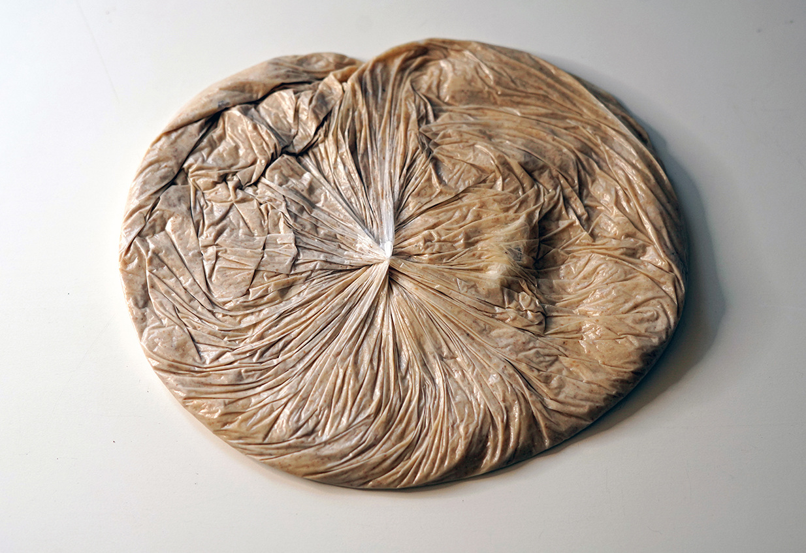
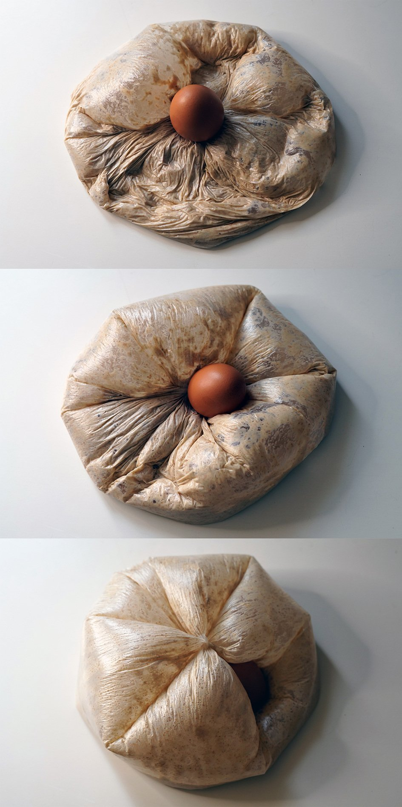

O pulmão de levanha não suspende o ovo, mas o engole, 2022
O pulmão de levanha não suspende o ovo, mas o engole, 2022 - estudo para respirar
água, trigo, bactérias fermentadoras, ovo do mpa e sacola de mercado, 30 cm x 20 cm

